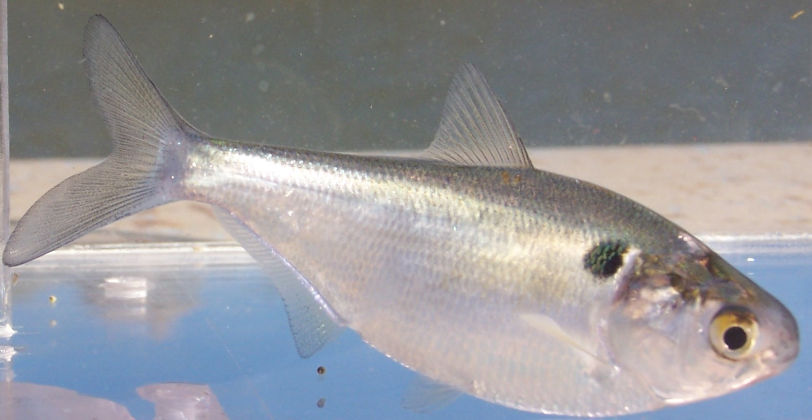
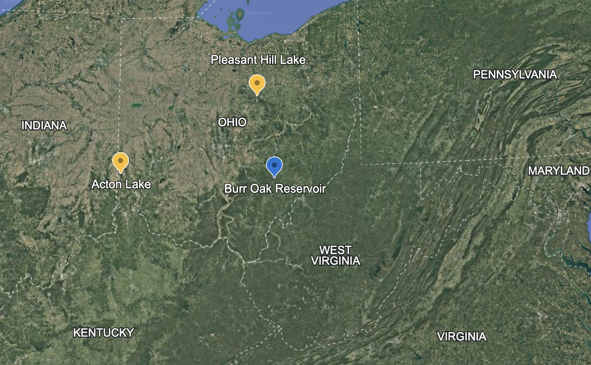
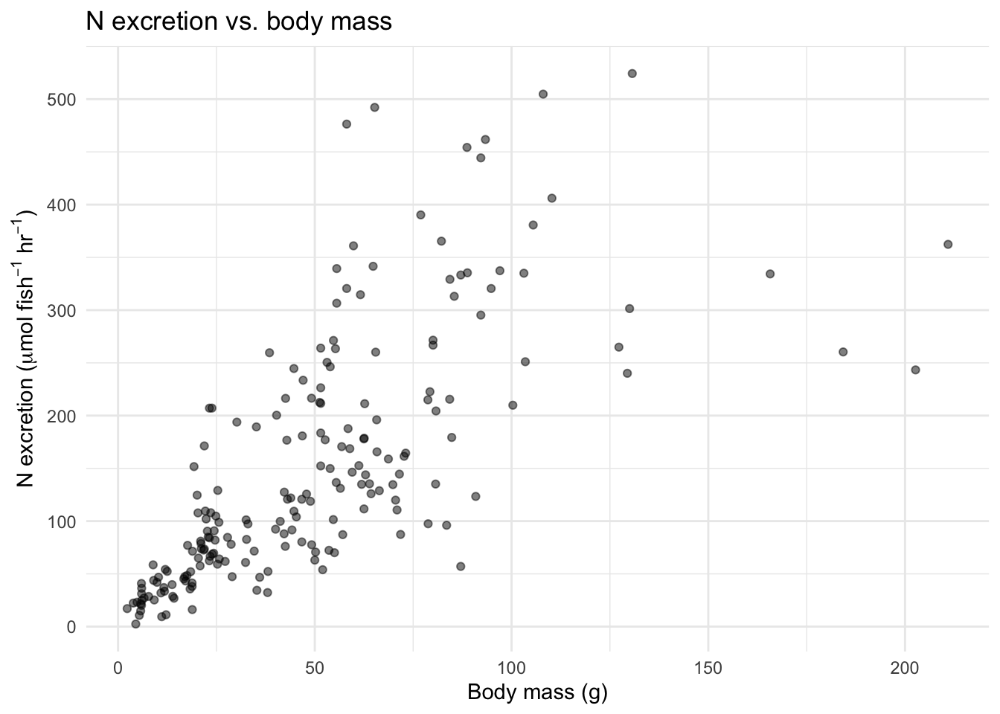
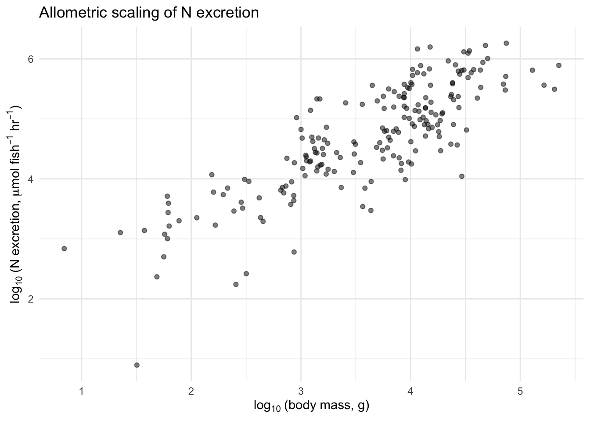
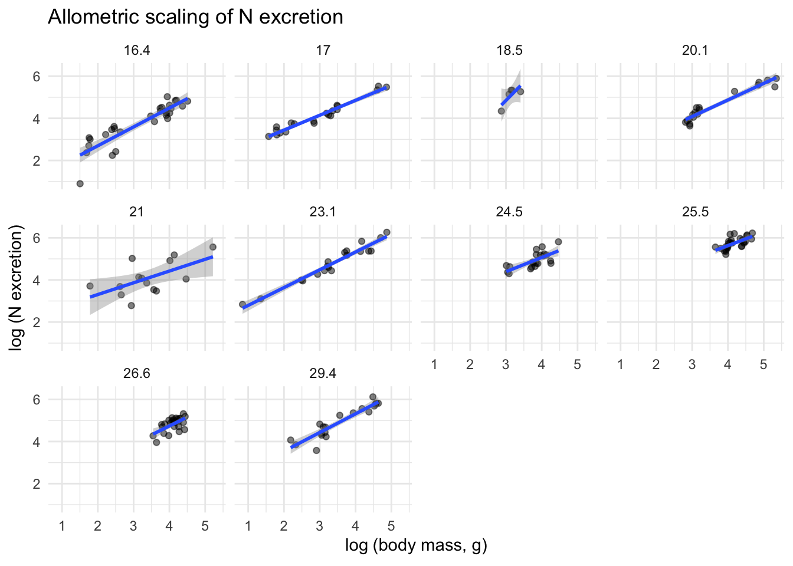
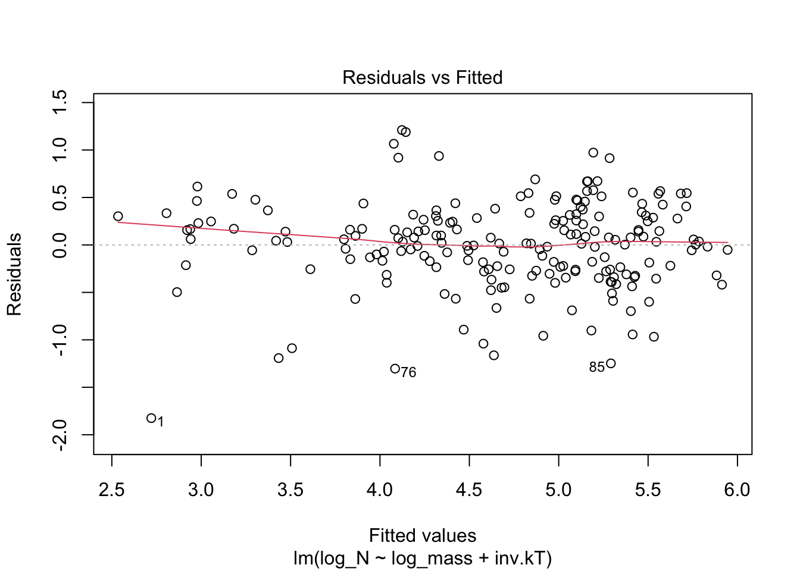

install.packages("broom")15 Metabolic Ecology: How do body size and temperature affect nutrient cycling?


15.1 Acknowledgement
This chapter is an R version of Vanni and Gephart (2011). I am grateful to Mike and Jessica and the Ecological Society of America for making the data and the article available.
15.2 Goals
In this chapter, you will explore how two fundamental properties of organisms—body size and temperature—control rates of nutrient cycling. Along the way, you will test specific quantitative predictions of the Metabolic Theory of Ecology (MTE), and discover how well those predictions hold up under real field conditions.
If you successfully complete this chapter, you will be able to
- explain how metabolic rates scale with body size (allometry),
- explain how metabolic rates depend on temperature (\(Q_{10}\)),
- use log-transformations to linearize power-law relationships,
- fit and interpret linear regressions in R,
- evaluate the support for specific quantitative hypotheses, and
- reason about how body size and temperature act simultaneously on a biological rate.
15.3 Preparatory steps
- General background: Read the sections below on allometry and temperature dependence. If your instructor has assigned background readings or lectures on metabolic ecology, complete those first.
- Data: go to our class data repository, and download
fish_nutrient_excretion.csv.- Put
fish_nutrient_excretion.csvin yourdatadirectory (insideRwork).
- Put
- Find out what you need for the deliverables (Section 15.9).
15.4 Background
15.4.1 The Metabolic Theory of Ecology: Why body size and temperature matter
The metabolic rates of organisms—plants, microbes, and animals—are strongly influenced by body size and body temperature (Gillooly et al. 2001; Brown et al. 2004). Large organisms obviously have higher metabolic rates than small ones, when rates are expressed on a per individual basis. And because biochemical reactions are temperature-dependent, most metabolic rates increase with body temperature, at least up to some upper tolerance limit.
Understanding how biological rates scale with size and temperature is important for several reasons. There is enormous variation in body size among Earth’s life forms, from tiny bacteria to great whales and giant sequoia trees. Even within a single species, body size can vary dramatically. Knowledge of how rates vary with size tells us how individuals of different sizes use resources, process materials like nutrients and energy, and interact with other species. Similarly, because organisms experience a wide range of temperatures—both naturally and increasingly due to human activity—understanding temperature effects helps us predict how organisms and ecosystems may respond to environmental change.
The Metabolic Theory of Ecology (MTE) provides mechanistic explanations for these relationships (West et al. 1997; Brown et al. 2004; Banavar et al. 2014). The theory describes how diffusion and diffusion networks in an individual organism cause body size alone to exert a strong and predictable effect on whole-organism metabolic rate. This theory also describes how the temperature regulation of biochemical processes at the molecular level has a similarly profound and predictable influence on whole-organism metabolic rate. Notably, and in contrast to most ecological theory, MTE makes predictions about the quantitative effects of body size and temperature metabolic rate.
At the base of all the explanation is the geometry of the resource distribution system (vascular system, simple 3D diffusion). All organisms take in limiting resources and have to distribute those resources to each part of each cell in the body. The key point is that the larger the organism, the greater the portion of the resources are in transit at any instant in time. This leads to an increasingly inefficient system, in which the metabolism of larger organisms has to run more slowly per unit resource:
15.4.2 Allometry: how rates scale with body size
At a constant temperature, the effect of body size on metabolic rate can be described with a simple power law:
\[B = B_0 M^z \tag{15.1}\]
where \(B\) is the organism’s metabolic rate (e.g., micromoles of nitrogen excreted per hour), \(B_0\) is a normalization constant, \(z\) is the allometric scaling exponent, and \(M\) is the organism’s body mass.
Allometric theory and extensive empirical data show that for many biological rates, the increase in metabolic rate is less than proportional to the increase in body mass. Mathematically, this means \(b < 1\), sometimes called negative allometry. The Metabolic Theory of Ecology (MTE) makes a very specific prediction: \(b = 0.75\) (West et al. 1997; Brown et al. 2004; Banavar et al. 2014). This prediction arises from theory about how resource distribution networks (like circulatory systems) scale with body size.
To get a feel for why \(b < 1\) matters, consider this: an elephant (\(5 \times 10^6\) g) weighs about 500,000 times more than a mouse (10 g). If \(b = 0.75\), the elephant’s metabolic rate is only about 19,000 times greater than the mouse’s—proportionally much less than the difference in body mass. Per gram, the mouse burns hotter.
Thus, Larger organisms can process more resources per unit time (\(B=aM^{3/4}\)), but do so less and less efficiently (\(\frac{B}{M}=aM^{-1/4}\)) due to resources in transport.
However, the prediction that \(b = 0.75\) is somewhat controversial. Some data suggest that the exponent is closer to 1.0 for many organisms (e.g., Reich et al. 2006), and others argue that \(b \approx 0.75\) only when averaged across many species but varies considerably among them (Isaac and Carbone 2010).
15.4.3 Temperature dependence and the Arrhenius Equation
In addition to the role of body size, MTE incorporates the effects of temperature. Gillooly et al. (2001) showed that metabolic rate can be predicted from both body mass and body temperature:
\[B = B_0 M^z e^{-E_a/(kT)} \tag{15.3}\]
where \(e\) is the base of the natural logarithm, \(Ea\) is the activation energy of metabolic enzymes, \(k\) is Boltzmann’s constant (\(8.617 \times 10^{-5}\) eV K\(^{-1}\)), and \(T\) is temperature in Kelvin.1
In the late 1800s, Svante Arrhenius described the power law relation for the temperature dependence of chemical reaction rates; you may have encountered this in your chemistry class. This was further quantified and explained using first principles of entropy and probability by Ludwig Boltzmann.2 Boltzmann showed how the emergent property of “temperature” emerges from the thermal energy of individual particles. Later, Max Planck further explicated this quantity, referring to the specific quantity as \(k\), and then named it after Boltzmann. You will also encounter Boltzmann’s constant in our last chapter, on global heating.
15.4.4 Nutrient excretion by fish
Most experimental tests of MTE have been done in the lab, where activity, temperature, and diet can be controlled and we can measure basal metabolic rate (i.e. base metabolic rate, at rest). But organisms in nature are often active, experience variable temperatures, and are feeding—they display active metabolic rates. Far fewer studies have tested whether MTE predictions hold under field conditions, where diet, activity, and other factors add noise.
Excretion rate is a type of whole-organism metabolic rate. It is an output of many metabolic processes, and it represents the quantity of nutrient released after maintenance and growth needs are met.
This output from the metabolic processes of many individuals has important consequences (Sterner et al. 2002). This excretion of nitrogen (N) and phosphorus (P) by fish is ecologically important because these nutrients, released in dissolved form that algae can readily use, can fuel a significant fraction of primary production in lakes (Vanni et al. 2006).
15.5 Using logarithms
It is common to express these relationships on a logarithmic scale, and we do this for two reasons. First, it expresses the relations on a relative in which multiplicative differences are shown as additive and our brains can understand additive differences more eaasily. Second, using a logarithmic scale linearizes the relations and allows us to more easily estimate the parameters of interest: \(z\) (allometric scaling) and \(E_a\) (temperature sensitivity).
Taking the logarithms of Equation 15.3, we have \[\ln (B) = \ln (B_0) + z \ln (M) - E_a \frac{1}{kT}\]
where \(k\) is Boltzmann’s constant and \(T\) is temperature in degrees Kelvin. Below, we will start with the raw data and create new variables of \(\ln (B)\), \(\ln (M)\), and \(1/(kT)\).
15.6 Hypotheses, our data, and predictions
Once we know what data we have available to us, we can use our hypotheses to make specific predictions about those data. Remember that a scientific hypothesis should be a general explanation of a process or pattern in nature, anbd prediction is a logical deduction that follows when we apply that general explanation to a particular system.3
So, logic follows in this manner:
The MTE describes the ecological consequences of body size and temperature. Given that theory, we can hypothesize that 1. because the metabolic rate of larger bodied organisms scale to the 3/4 power of size, fish nutrient excretion rate should also scale in the same manner; and 1. because the metabolic rate of warmer organisms scale with temperature by a factor of \(E_a/(kT)\) where \(E_a \approx 0.23\), fish nutrient excretion rate should also scale in the same manner.
What data do we have?
The data we will analyze come from field studies of nutrient excretion by gizzard shad (Dorosoma cepedianum) in three Ohio lakes Schaus et al. (1997); Higgins et al. (2006). We have excretion data for 200 individual fish. These 200 fish are a tiny fraction of the fish in these lakes, but they represent a useful sample from which we can extrapolate.
Individual fish were captured, placed in filtered lake water, and investigators measured the change in (i) dissolved N and (ii) P concentration over a fixed period of time. The variables in the data set are:
temp_C— water temperature (°C) experienced by the fishmass_g— wet body mass (grams)N_u.h— nitrogen excretion rate (\(\mu\)mol N per fish per hour)P_u.h— phosphorus excretion rate (\(\mu\)mol P per fish per hour)
15.6.1 Predictions
Given our hypotheses and the data we have, we predict that gizzard shad nutrient excretion rate will scale with the 3/4 power of gizzard shad body mass, and by a factor of by a factor of \(E_a\) with the inverse of temperature \(1/T\).
You will use multiple linear regression to evaluate those predictions.
15.7 Getting R ready for work
Open R using RStudio, and load the packages we’ll need. Note that we will use a new package, broom. You will need to install broom if you hadn’t done so for some other exercise or your own research.
To install broom, you can use the Tools drop-down menu in RStudio, or run this code:
Now load broom, and tidyverse if you have not already done so.
library(tidyverse)
library(broom)Now read in the data and take a look.
# Note we skip the first 8 lines because they are 'metadata',
# which is 'data about data` or information about the variables.
fish <- read.csv("data/fish_nutrient_excretion.csv", skip=8)
glimpse(fish)Rows: 200
Columns: 5
$ Fish_ID <int> 1, 2, 3, 4, 5, 6, 7, 8, 9, 10, 11, 12, 13, 14, 15, 16, 17, 18,…
$ temp_C <dbl> 16.4, 16.4, 16.4, 16.4, 16.4, 16.4, 16.4, 16.4, 16.4, 16.4, 16…
$ mass_g <dbl> 4.50, 5.40, 5.75, 5.80, 5.95, 9.20, 10.90, 11.10, 11.65, 11.80…
$ N_u.h <dbl> 2.45, 10.67, 14.89, 21.69, 20.14, 25.25, 31.93, 9.40, 37.01, 3…
$ P_u.h <dbl> 1.71, 2.16, 1.66, 1.49, 2.14, 3.21, 1.99, 2.69, 2.48, 3.91, 2.…summary(fish) Fish_ID temp_C mass_g N_u.h
Min. : 1.00 Min. :16.40 Min. : 2.32 Min. : 2.45
1st Qu.: 50.75 1st Qu.:18.50 1st Qu.: 21.93 1st Qu.: 62.88
Median :100.50 Median :23.10 Median : 46.00 Median :119.34
Mean :100.50 Mean :22.54 Mean : 49.16 Mean :150.75
3rd Qu.:150.25 3rd Qu.:25.50 3rd Qu.: 65.28 3rd Qu.:213.14
Max. :200.00 Max. :29.40 Max. :210.94 Max. :524.29
P_u.h
Min. : 0.590
1st Qu.: 4.975
Median : 9.950
Mean :12.304
3rd Qu.:17.273
Max. :50.660 You should have 200 rows and 5 columns. The fish range in mass from about 2 g to over 200 g, and temperatures range from about 16°C to 29°C.
What are 16°C to 29°C in Fahrenheit degrees? (The conversion factor is \(Y^\circ\, \mathrm(F) = \frac{180}{100} X^\circ\, \mathrm{C} + 32\))
15.8 Exploring the data
We already know that we will want to create a few new variables based on the raw data, including the logs of excretion rates, mass and the inverse of temperature in Kelvin. Below we do that.
First, here is the value of Boltzmann’s constant, in units of electron volts per degree Kelvin
boltzmann_k <- 8.617333262e-5Now we transform our variables.
## Add log-transformed columns to the data
fish <- fish %>% #start with our fish data set, and
mutate(log_mass = log(mass_g), # create ln(mass)
log_N = log(N_u.h), # ln(N excretion)
log_P = log(P_u.h), # ln(P excretion)
temp_K = 273.15 + temp_C, # degrees Kelvin
inv.kT = 1/(boltzmann_k * temp_K) # inverse scaled Kelvin
)Before testing any hypotheses, let’s look at the data. Always plot your data before you analyze it.
15.8.1 Raw-scale plots
ggplot(fish, aes(x = mass_g, y = N_u.h)) +
geom_point(alpha = 0.5) +
labs(x = "Body mass (g)",
y = expression(paste("N excretion (", mu, "mol ", fish^{-1}, " ", hr^{-1}, ")")),
title = "N excretion vs. body mass") +
theme_minimal()
Make a similar plot for P excretion rate. What do you notice about the shape of these relationships? They are curved—larger fish excrete more, but the relationship is not a straight line.
15.8.2 Log-transformed plots
Now let’s see what happens when we log-transform both axes, as suggested by the allometric equation (Equation 15.2).
ggplot(fish, aes(x = log(mass_g), y = log(N_u.h))) +
geom_point(alpha = 0.5) +
labs(x = expression(log[10]~"(body mass, g)"),
y = expression(log[10]~"(N excretion, " * mu * "mol " * fish^{-1} * " " * hr^{-1} * ")"),
title = "Allometric scaling of N excretion") +
theme_minimal()
That looks much more linear! The log-transformation did exactly what Equation 15.2 predicted. Make the same plot for P excretion.
MTE also suggests that temperature might influence excretion rates. Here we plot separate rate vs. mass graphs for each temperature:
ggplot(fish, aes(x = log_mass, y = log_N)) +
geom_point(alpha = 0.5) +
geom_smooth(method = "lm", se = TRUE) +
facet_wrap(~temp_C) +
labs(x = expression(log~"(body mass, g)"),
y = expression(log~"(N excretion)"),
title = "Allometric scaling of N excretion") +
theme_minimal()`geom_smooth()` using formula = 'y ~ x'
15.8.3 Allometric and temperature scaling of excretion rates
Here you need to estimate the allometric scaling exponent (\(z\)) and the energy of activation (aka temperature sensitivity) for both N and P excretion rates. Multiple regression will let us address a key question how we can how do you deal with the fact that excretion rates were measured at different temperatures?
There is more than one reasonable approach. Think about this before reading on. One approach is to pool all the data together and fit a single multiple regression. Another is to fit separate regressions for each temperature and then compare slopes. You could try both and think about what you learn from each approach.
15.8.3.1 Mulltiple linear regression
Now fit a linear regression for log N excretion vs. log mass and inverse temperature.
## Fit the regression
m_N_all <- lm(log_N ~ log_mass + inv.kT, data = fish)If it ran without error, you are ready for the next step.
Next step: check your assumptions
All statistical models have builit-in assumptions. The regression we ran here assumes, among other things, that the relationships are linear and the unexplained noise in the data are normally distributed, both above and below the expected or fitted values. Here we examin that graphically.
plot(m_N_all, which=1)
If these assumptions are met, then the residual unexplained noise is just as likely to be positive and negative for any fitted value. And that is essentially what we see. Thus these assumptions appear to be met.
15.8.3.2 Evaluating the predictions
Recall that our equation is now
\[\ln (B) = \ln (B_0) + z \ln (M) - E_a \frac{1}{kT}\] and our regression will estimate \(z\) for log mass, and \(E_a\) for inverse scaled temperature. Here are the 95% confidence intervals on those.
A confidence interval (CI) is essentially a procedure, rather than a thing. A 95% CI is a procedure wherein if you repeated the experiment many, many times, the CIs would capture the true estimate about 95% of the time.
Here are the confidence intervals for \(z\) (for log mass) and \(E_a\) (for inverse scaled temperature).
## View the results
# ignore the intercept
confint(m_N_all) 2.5 % 97.5 %
(Intercept) 11.4522604 21.4184325
log_mass 0.7062991 0.8718949
inv.kT -0.4957793 -0.247847015.8.3.3 Do the same for P excretion.
15.8.4 Thinking bigger: ecosystem consequences
We have focused on excretion by individual fish. But remember the bigger picture (Figure 15.1): gizzard shad are extremely abundant in many Midwestern lakes. They consume sediment detritus, extract what they need, and excrete the rest as dissolved N and P that algae can immediately use.
Consider this: if you know the allometric scaling exponent and \(E_a\), and you know the size distribution and temperature regime of a lake, you could predict the total nutrient flux from the fish population to the water column. This is exactly the kind of scaling-up that makes metabolic ecology so powerful—and so important for understanding ecosystem function.
15.9 Deliverables
Compile the following into one document and submit by the due date. Turn in a Word document or PDF with the following:
- Log-log scatter plots of N and P excretion vs. body mass for each temperature.
- Confidence intervals of the allometric scaling exponent (\(z\)) for both N and P excretion, and for temperature sensitivity (\(E_a\)).
- Address these questions:
- How well do the predictions of the Metabolic Theory of Ecology hold up for nutrient excretion by fish under field conditions? What specific factor or factors might cause deviations from MTE predictions in the field?
- Suppose a lake warms by 2°C due to climate change. Based on your \(E_a\) estimate, by how much would individual excretion rates change?
- If warming also shifts the fish population toward smaller body sizes (as has been observed in some systems), how would that interact with the temperature effect on total nutrient flux?
Recall Kelvin degrees = Celsius degrees + 273.15↩︎
Boltzmann’s work on this and on entropy have connections throughout science, including Planck’s constant and blackbody radiation, and even the meaning of time.↩︎
Recall that a scientific theory is a very strongly supported and even more general set of explanations that provides framework to organize our well-supported ideas and helps us generate new hypotheses.↩︎